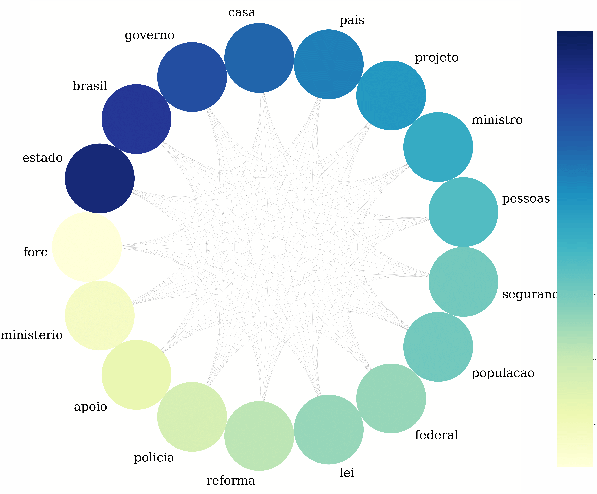
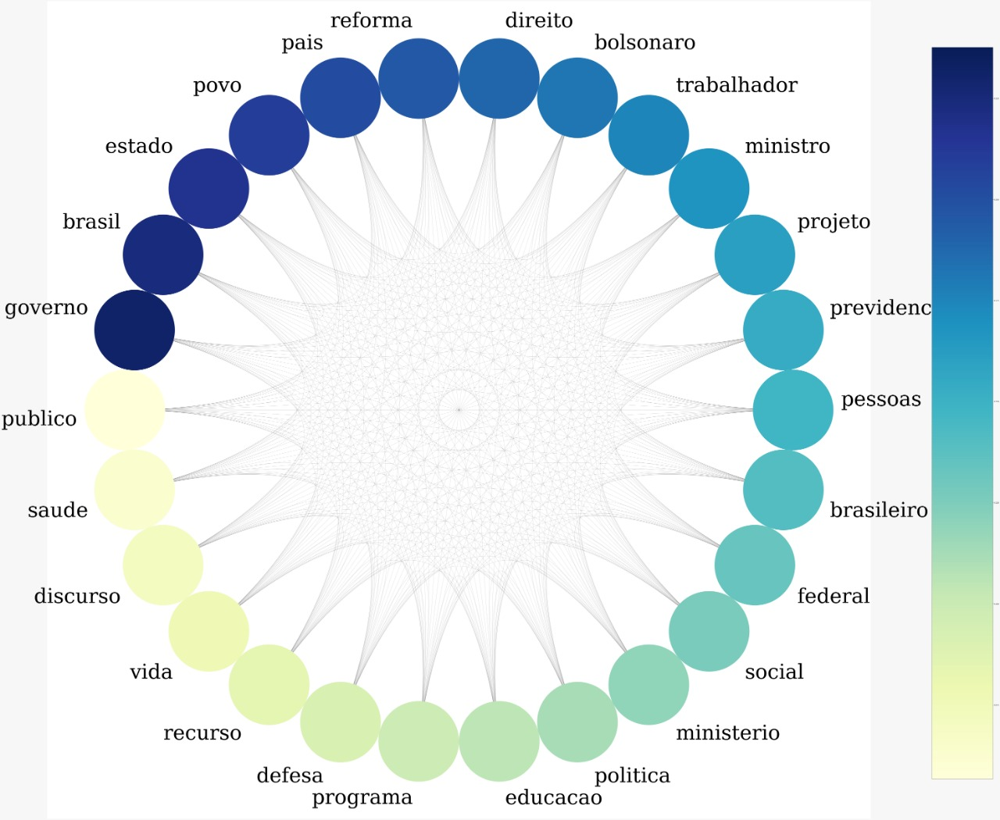
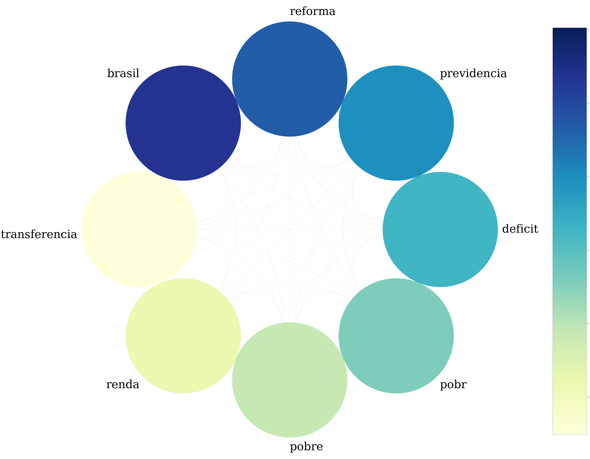
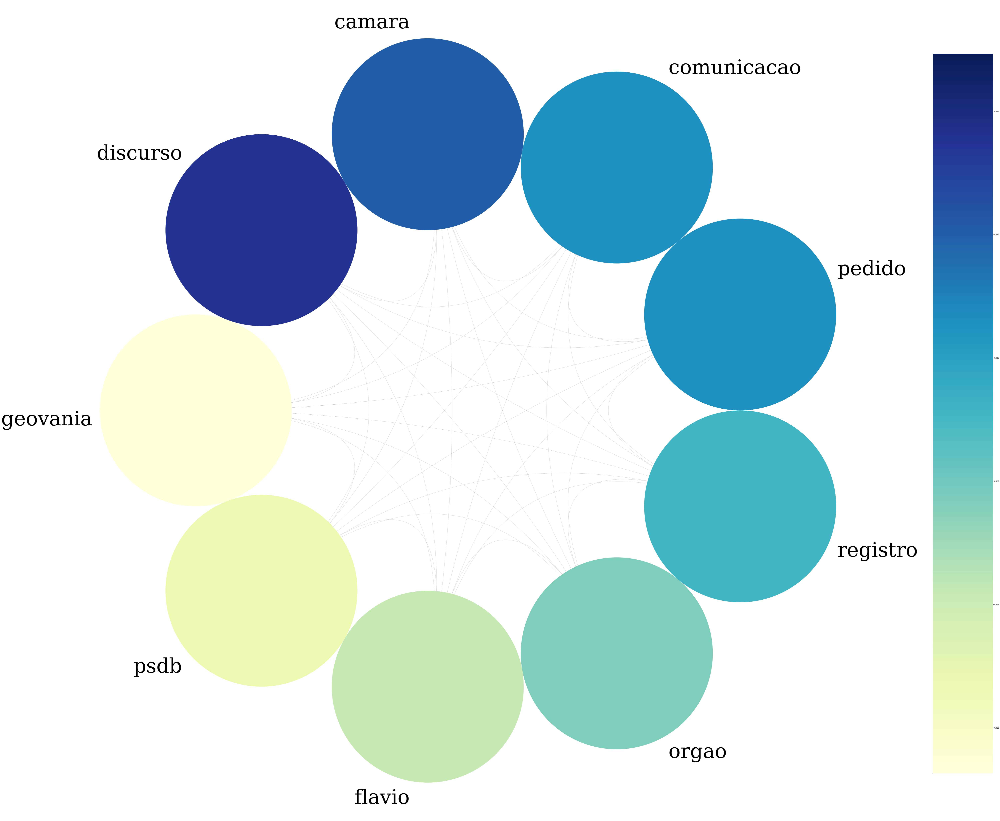

Vivemos numa época em que é necessário prestar mais atenção ao que os políticos estão fazendo. Uma forma de se manter atualizado é monitorar o que eles dizem em seus discursos na Câmara.
Para a nossa sorte, a API da câmara de deputados disponibiliza discursos dos deputados. Para examinar esses textos, podemos usar a teoria de grafos, conforme este artigo sobre análise de redes a fim de medir o viés em discursos.
O código utilizado para esta análise pode ser encontrado neste repositório.
Dos dados aos grafos
Tudo se inicia na importação dos dados. Com o auxílio da biblioteca requests do Python, podemos consultar os discursos de cada deputados através da url deputados\{id}\discursos. Os ids dos deputados, bem como seus respectivos partidos, foram recuperados consultando a url deputados. Para definir um limite de discursos utilizados, filtramos apenas os que aconteceram este ano adicionando os parâmetros dataInicio=2019-01-01 e
dataFim=2019-06-11. Finalmente, ordenamos pelo horário de início do discurso. No fim, teremos uma consulta assim:
query = 'https://dadosabertos.camara.leg.br/api/v2/deputados/'+str(dep[0])+\
'/discursos?dataInicio=2019-01-01&dataFim=2019-06-11&ordenarPor=dataHoraInicio&ordem=ASC'
O retorno desta consulta é um json que contém a chave transcricao. Seu valor é justamente o discurso em si.
speeches = []
total = len(deputies)
# Create a dictionary that contains
# id, speech, party, state
for i, dep in enumerate(deputies):
# Get all speechs given by the current deputy
query = 'https://dadosabertos.camara.leg.br/api/v2/deputados/'+str(dep[0])+\
'/discursos?dataInicio=2019-01-01&dataFim=2019-06-11&ordenarPor=dataHoraInicio&ordem=ASC'
response = requests.get(query)
speech_json = response.json()
# Add each speech to the list
speeches += [[ dep[0], speech['transcricao'], dep[1], dep[2] ] for speech in speech_json['dados']]
Com isso, podemos montar um dataset que terá informações como id do deputado, discurso, sigla do partido e sigla do estado.
Criado o dataset, é hora de tratar os dados. A característica mais importante a ser notada nos discursos é a de que todos tem uma introdução do locutor, como nos exemplos abaixo:
O SR. ABOU ANNI (PSL - SP. Sem revisão do orador.) -
DISCURSO NA ÍNTEGRA ENCAMINHADO PELO SR. DEPUTADO BILAC PINTO.\r\n\r\n
Para remover esses textos que não trazem relevância para o estudo, usamos algumas funções do pandas. Para o primeiro caso, a string é dividida pelo símbolo “-“ duas vezes, ignorando-se as duas primeiras substrings obtidas. Esse processo apaga as strings que não seguem o primeiro padrão, sendo então necessário aplicar o tratamento do segundo padrão em uma cópia do dataset e unir ambos ao final. A segunda forma de introdução é removida ao dividir a string quando encontrar “\r\n\r\n” e manter apenas a segunda substring. Ao final, ainda é necessário remover todas as ocorrências de “\r”, “\n” e “-“ para a próxima etapa do desenvolvimento.
A formação dos grafos se dá através do mapeamento das palavras usadas no discurso, sendo a frequência em que elas aparecem no texto o atributo que usaremos para medir sua importância. Cada nó é uma palavra e uma aresta entre duas palavras indica que elas aparecem no mesmo contexto.
O que é contexto para nós? Bem, dada uma frase, cada palavra que a compõe é agrupada com suas vizinhas em grupos de 2 e 5 palavras. Por exemplo, a frase
Olhos de cigana oblíqua e dissimulada
seria dividida em
[Olhos de ], [de cigana], [cigana oblíqua], [oblíqua e], [e dissimulada], [ Olhos de cigana oblíqua e ], [de cigana oblíqua e dissimulada]
Esse método é o mesmo explicado no artigo mencionado na seção anterior e isso que tratamos como o contexto de uma palavra.
Depois de divididas, são contadas quantas vezes cada conjunto ocorre no texto. Para isso, usamos a classe CountVectorizer do scikit-learn, que recebe uma expressão regular na forma ['[A-Za-z]+(?=\\s+)'] para recuperar todas as palavras além dos espaços em branco que a seguem. Ao receber o parâmetro ngram_range=(2,5), a própria função gera todas as combinações de palavras vizinhas de tamanho de 2 a 5 (sendo as de tamanho 3 e 4 removidas para formar o grafo nos próximos passos).
Um parâmetro essencial que deve ser passado é o stop_words, que define quais palavras devem ser ignoradas neste processo. Conjunções e artigos, por exemplo, são elementos que se repetem muito na língua portuguesa, o que traria uma frequência muito alta para estas palavras que não tem significado ao serem analisadas sozinhas. Sendo assim, muitos verbos, saudações, advérbios e outros elementos são adicionados nesta lista e não se tornam nós de um grafo.
A classe é instanciada como abaixo:
vec_alphanumeric = CountVectorizer(token_pattern=TOKENS_ALPHANUMERIC,
decode_error='replace',
stop_words=STOP_WORDS, ngram_range=(2,5),
encoding='latin1', strip_accents='unicode')
e ao acessar vec_alphanumeric.vocabulary_ temos acesso a um dicionário no qual cada chave é um conjunto de palavras e o seu valor representa o número de ocorrências no texto.
O grafo é gerado usando a biblioteca NetworkX. O método responsável por sua criação recebe um par (chave, valor) do dicionário criado pelo CountVectorizer e da chave extrai todas as palavras, criando um nó para cada. Depois, forma pares dessas palavras e cria uma aresta para cada par com o peso sendo o valor recebido na entrada. Se a aresta já existir, seu peso é somado à frequência da frase.
def generate_graph(vocabulary):
# Create a undirected graph
G = nx.Graph()
# Iterate over each item of the vocabulary
for phrase, frequency in vocabulary.items():
# Get words in the phrase
words = phrase.split()
# Using only tokens of length 2 or 5
if len(words) not in [2,5]:
continue
words_norm = [norm(word) for word in words if is_important(word) ]
# Extract unique words in the phrase
words_unique = list(set(words_norm))
# Create a node if it does not exists already
G.add_nodes_from(words_unique)
# Form combinations of 2 from the words
# which will be a edge
pair = combinations(words_unique, 2)
for word1, word2 in pair:
edge = (word1, word2)
# Increments weight of edge
# if it already exists
# Otherwise, create a new edge
if edge in G.edges:
G.edges[word1, word2]['weight'] += frequency
else:
G.add_weighted_edges_from([(word1, word2, frequency)])
return G
A função norm é usada para evitar repetições causadas por palavras no plural ou algumas conjugações de verbos.
Com isso, obtemos nossos lindos grafos que serão analisados na próxima seção.
Ligando os pontos
Neste estudo, são usados todos os discursos de deputados de um mesmo partido. Os partidos gerados são PSL, PT, PDT e NOVO.
Os conceitos utilizados para extrair informações são os de cliques e centralidade. Uma clique nada mais é do que um subconjunto de nós que são totalmente conectados entre si. É um conceito geralmente usado para representar um grupo (de pessoas) no qual todas se conhecem, que aqui usamos para detectar um grupo de palavras que aparecem no mesmo contexto.
Já a centralidade é uma medida que ajuda a identificar nós importantes no grafo. Usamos a centralidade de grau, que mede o número de ligações (arestas) que incidem em um nó. Como estamos lidando com um grafo não direcionado, esse número é o mesmo número de arestas que estão ligadas ao nó. Esse indicador é usado para colorir cada nó dos grafos abaixos, gerados com a biblioteca nxviz.
PSL
A clique que obtemos com o grafo gerado com discursos de deputados do PSL comprova a intuição que temos ao pensar nesse partido. Segurança e polícia, que são temas que associamos às promessas dos candidatos, estão presentes.

Uma pauta recorrente no congresso e cuja aparição era esperada é a reforma da previdência, que pode justificar o nó “reforma” neste grafo.
PT
Já analisando o discurso do PT, na maior clique aparecem termos como educação, direito, social e saúde que são diretamente ligados às principais pautas do partido.

É esperado também a presença de “defesa”, visto que “em defesa da educação” é uma frase frequentemente usada para falar das greves e protestos contra os cortes contigenciamentos das verbas para a educação. Isso também pode justificar a presença da palavra “ministro”, que foi muito criticado por falta de comunicação e por suas decisões.
O tema de reforma da previdência também aparece neste grafo, o que não surpreende dada a posição forte do partido contra a mesma.
NOVO
O grafo do NOVO difere dos demais, sem conter palavras comuns como “estado” e “governo”, mas apresenta “reforma” e “previdencia”, como seria esperado do partido que defende a reforma.

É interessante ver que assuntos como renda e déficit são temas que o deputados do NOVO mais gostam de citar e discutir.
PDT
A clique obtida a partir dos discursos do PDT é a que mais se diferencia, sem conter nenhuma das palavras comuns aos anteriores.

É curioso aparecerem nomes próprios como “flavio” e “geovania”, além dos termos como “discurso”, “pedido”, “comunicacao” e “registro”.
Considerações finais
Como qualquer estudante de ciência da computação nota em algum ponto de sua trajetória acadêmica, os grafos possuem as mais variadas aplicações. Neste caso, serviram para trazer palavras-chave dos discursos dos deputados entre janeiro e junho de 2019.
Com poucas métricas, já foi possível notar como os temas educação e reforma da previdência movimentaram a câmara nesses primeiros 6 meses, levando-se em consideração os 4 partidos analisados. Isso serve de estímulo para usar grafos, além de outras técnicas, para promover o monitoramento das ações dos políticos, incentivando, assim, a participação da população brasileira.
Links
Curso do Datacamp sobre análise de redes (inglês)
Verbete sobre cliques (inglês)
Até a próxima!
Twitter Facebook